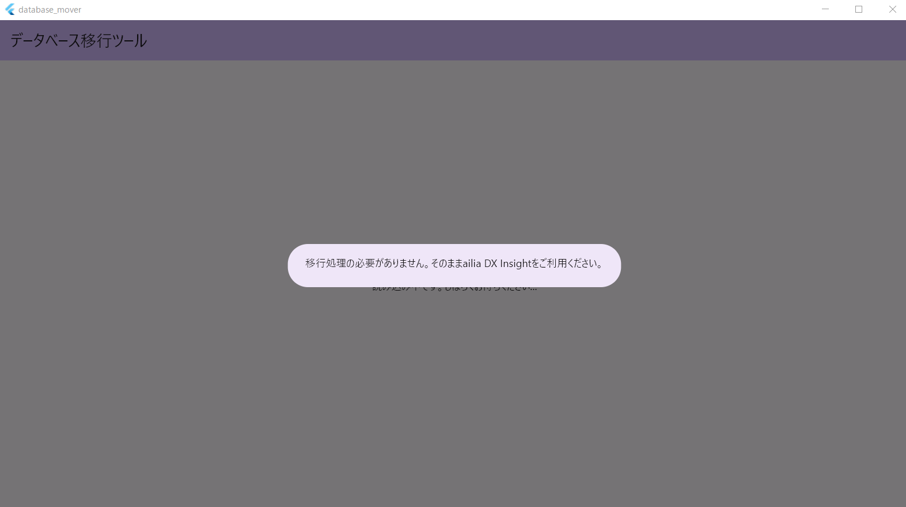

PCを買い替えた場合などに、ユーザデータを移行する方法を説明します。
ailia DX Insightでは、「ユーザ/ドキュメント/ailia DX Insight/」フォルダにユーザデータが保存されています。
「ドキュメント」フォルダのパスはWindowsの設定で変更することも可能です（Windows10/Windows11の場合）。
移行元のPCの「ユーザ/ドキュメント/ailia DX Insight/」フォルダを、移行先の「ユーザ/ドキュメント/ailia DX Insight/」フォルダにコピーします
移行元と移行先のファイルパスが同じ場合は移行完了です
移行元のPCと移行先のPCで、ドキュメントフォルダのパスが異なる場合、ユーザデータ内のパスを移行ツールを使用して変更する必要があります。
移行ツールを起動します
移行元と移行先のファイルパスが自動的に設定されますので、移行ボタンを押します
「処理が完了しました」というウィンドウが表示され、「終了する」を選択するとデータ移行が完了します
ailia DX Insightを起動し、データ移行が完了していることを確認してください
移行元のPCと、移行先のPCで、ドキュメントフォルダのパスが同じ場合、移行ツールを実行すると、「移行処理の必要がありません。そのままailia DX Insightをご利用ください。」と表示されます。
